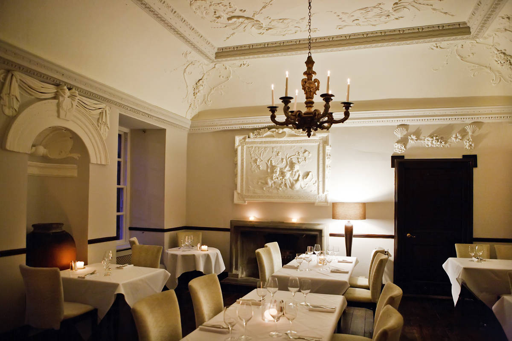
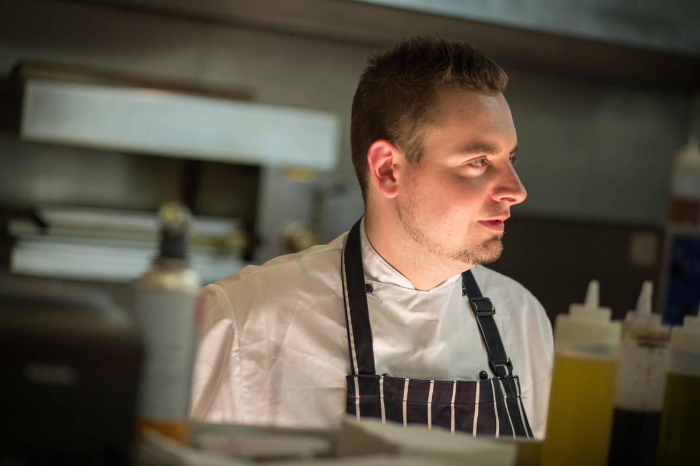

anfora
Welcome to Anfora Wine Bar
A new exciting space, located in the oldest commercial building in Scotland's capital city. Anfora offers a unique drinking & dining experience. Primarily focusing on organic & natural (biodynamic) wines from small independent producers around the world, thus introducing wine lovers to new tastes & flavours. Our food is imaginative, created from fresh, seasonal produce & designed to compliment our wine list. We like to keep things simple, without skimping on quality.
The aim is to give people a place to encounter thrilling wines & exceptional food without the expensive trappings of high-end restaurants.
You can find us at the Vaults in Leith, a stone throw away from Leith Walk.
Private dining
Inside Anfora & to the left of the bar & brasserie lies one of the most beautiful & historic dining rooms.
Once named 'The Sales Room' this was where the wines of Bordeaux were sampled by the members of the Guild & purchased if approved. The price then fixed by the Edinburgh Town Council.
Nowadays, you can book this exclusive space for your ideal occasion & your events can be tailored for you.
We can offer a bespoke menu & matching wines to take care of any fuss or formalities, letting you & your guests to enjoy & relax in the splendour of this beautifully candle-lit room.
CHEF
Attila's love for food began when he was a ten year old watching his grand- mother in awe as she baked in their small kitchen in Budapest. Since arriving in Britain, Attila has worked his way up to sous chef in the award winning Michelin star Chapters Restaurants. His love and passion for food is not only exemplified in the menu, but also infectious.
News and events

Contact us
Edinburgh
EH6 6BZ
Telephone: 0131 553 6914
Email: info@anforawinebar.co.uk
Opening times:
Mon: 12:00 - 23:00
Tue: Closed
Wed-Thu: 12:00 - 23:00
Fri-Sat: 12:00 - 00:00
Sun: 12:00 - 23:00